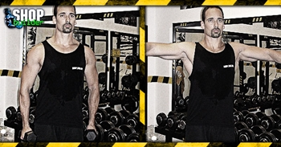

Ugrás a tartalomra
Ugrás a tartalomra
Testépítés
Oldalemelés állva
{kind=link}
Hatás
Az oldalemelés állva az oldalsó deltaizmokat fejleszti elsősorban - ha helyesen hajtod végre.
Kiinduló helyzet
Állj kiegyenesedve, tarts hajlított könyökkel egy-egy egykezes súlyzót mindkét kezedben.
A mozgás
A súlyzókat egyszerre emeld ki oldalra a tested mellől addig, amíg vállmagasságnál egy kicsit fentebb nem kerül a súly. Engedd vissza lassan, és ismételd meg a gyakorlatot.
Edzéstipp
Ügyelj a kisujjadra! Mit jelent ez? A kisujjad a felső ponton legyen magasabban, mint a hüvelykujjad, mintha egy kannából akarnál vizet önteni. Ezzel az apró kis mozdulattal még több stimulációt tudsz az oldalsó deltaizmokra helyezni.
Ezt a gyakorlatot többféle módon lehet végezni. Álló vagy pad szélén ülő helyzetben egyaránt hatásosan végezhető, a cél az oldalsó deltaizmok megterhelése. Ha már nagyon erőlködsz, próbálj meg előrehajolni, "bedőlni" a gyakorlatba, és nem hátrahajolni (mert úgy az amúgy is erős elülső deltaizmokat terheled). De ez nem azt jelenti, hogy előre-hátra kell ingáznod, ezzel elvész a gyakorlat lényege!